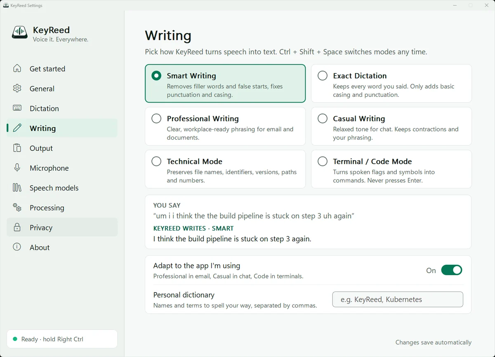
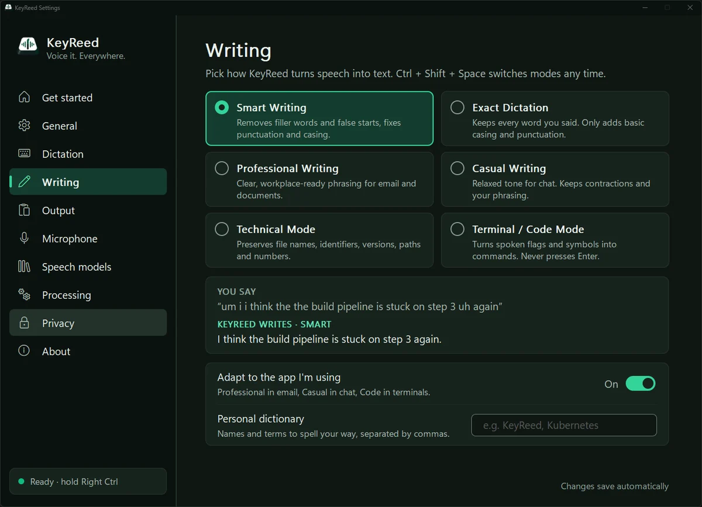
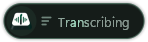
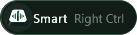

Technical Reference · KeyReed 2.1.1
Everything, in detail.
Every model, pipeline stage, privacy guarantee, shortcut, benchmark, and limitation in the current 2.1.1 source — with zero hand-waving.
The real app on Windows
KeyReed is a native Win32 Rust workspace (vi-core, vi-asr, vi-rewrite, vi-audio, vi-win32, vi-app) dual licensed under MIT or Apache-2.0. At idle, the floating listener is a 36×36 logical-pixel mark with zero background timer activity; Settings opens on a 60 Hz spring-animated Win32 surface that follows light or dark mode.


- Idle
Paints zero frames at rest.  Listening
Listening
11-bar RMS level meter from centre.
Transcribing
Mint lines: voice becomes text. Inserted
Inserted
Draws check when text lands.
Hover
Shows active mode & shortcut.
Actual captures from KeyReed 2.1 via its built-in --ui-gallery mode.
Speech, grammar & writing models
All eight speech models are INT8 ONNX archives run on your CPU through sherpa-onnx. None download unless you ask, and every archive is verified against a compile-time size and SHA-256 digest in crates/vi-asr/src/catalog.rs before activation.
| Model | Languages | Download | Approx. RAM | Hotwords | Licence |
|---|---|---|---|---|---|
| Parakeet TDT 0.6B v2 (default) | English (US/UK/IN + punctuation) | ≈460 MB | ≈690 MB | Yes | CC-BY-4.0 |
| Parakeet TDT 0.6B v3 | 25 European languages | ≈465 MB | ≈710 MB | Yes | CC-BY-4.0 |
| Parakeet TDT 0.6B Ultra | 25 European languages | ≈465 MB | ≈715 MB | Yes | CC-BY-4.0 |
| Parakeet TDT 110M | English (low-RAM tier) | ≈103 MB | ≈190 MB | Yes | CC-BY-4.0 |
| Whisper Small.en | English | ≈606 MB | ≈440 MB | No | MIT |
| SenseVoice Small | en, zh, ja, ko, yue | ≈999 MB | ≈290 MB | No | FunASR |
| Moonshine Base | English | ≈239 MB | ≈165 MB | No | MIT |
| Moonshine Tiny | English (legacy PCs) | ≈103 MB | ≈95 MB | No | MIT |
Quick Fix & Composer local models: Quick Fix uses the Windows spell checker plus the SHA-256-pinned gector-bert-en-int8 grammar tagger (~73.1 MB archive, ~250 MB RAM, Apache-2.0). The Composer and optional dictation polish use local GGUF writing models via llama-server: Qwen3.5-0.8B-Q4_K_M (~508 MB download, ~900 MB RAM, Apache-2.0, default), plus optional 2B and 4B tiers.
Processing pipeline & guards
Every dictation passes through deterministic stages designed so an optional language model can never hallucinate assistant chatter or alter numbers without falling back safely.
- 1. Hotkey & Capture (
vi-win32,vi-audio): Low-level keyboard hook ignores key repeat (110 ms minimum hold). Recording keeps 200 ms after release (up to 600 ms if speech continues) so final syllables are not clipped, resampled to 16 kHz via a polyphase Blackman-Harris windowed-sinc filter with a 20 Hz DC blocker and 30 ms level gate. Capped at 30 minutes (processed at the cap, not discarded). - 2. Streaming CPU ASR (
vi-asr): Silero VAD segments speech as you talk so completed phrases decode before you release the key. When your personal dictionary has entries, Parakeet switches tomodified_beam_searchwith BPE hotword biasing. - 3. Tier 0 deterministic rules (
vi-rewrite/src/tier0.rs): Strips fillers and stutters, resolves spoken self-repairs, preserves identifiers/paths/ports/versions, applies your vocabulary, and compiles spoken flags/pipes in Terminal / Code mode (~0.3 ms). - 4. Optional local grammar model + Guards (
vi-rewrite/src/guards.rs): In Smart, Professional, Casual, and Technical modes,Qwen3.5 0.8Bpolishes phrasing when needed (skipped on clean sentences). Strict guards reject empty output, assistant chatter, changed numbers/identifiers, or runaway length — falling back automatically to Tier 0. - 5. Delivery (
vi-win32/src/typing.rs): Auto Insert types into the active window via batched UnicodeSendInput(~600 chars/s) and falls back to the clipboard on password boxes, elevated Administrator windows (UIPI), or focus changes during transcription.
Privacy specifics & real source excerpts
- Offline by default:
ProcessingProfile::MaxPrivacyOfflineforbids network calls for audio or text, enforced by a unit test. Network is only touched when you download a model over HTTPS. - Audio in RAM only: Recorded samples live in memory, never touch disk on the normal dictation path, and are zeroized once decoded.
- Optional cloud profiles: Balanced and Maximum Accuracy only run if you opt in and enter your own API key (stored encrypted with Windows DPAPI; KeyReed ships no key).
- Clipboard hygiene: Excluding fallback clipboard writes from Windows Clipboard History defaults to
truefor new configurations in%LOCALAPPDATA%\keyreed\config.json. - Audit note: The style store and edit watcher exist in
vi-corewith unit tests, but neither is wired into the 2.1.1 runtime — KeyReed reads back none of your edits. An independent third-party packet capture of the offline profile has not been published yet; inspect the code below or capture your own.
scripts/gen-excerpts.py.
Browse all crates
Default shortcuts & CLI flags
| Action | Default shortcut | Notes |
|---|---|---|
| Dictate (hold or toggle) | Right Ctrl | Configurable in Settings › Dictation |
| Quick Fix selection | CtrlWinG | Sure fixes replace with Undo; uncertain/formatted open Review |
| Open the Composer | CtrlWinK | Fix, Improve, Shorter, Tone, Summarise, or custom prompt |
| Cancel active recording | Esc | Discards audio without touching target or clipboard |
| Cycle writing mode | CtrlShiftSpace | Shows quiet 1.6 s mode pill hint |
Useful CLI flags on keyreed.exe: --help, --version, --settings, --list-models, --download-model <id>, --print-foreground.
Speed method & measured numbers
Measurements were recorded on a 2018 laptop (Intel Core i7-8850H 6C/12T CPU, 64 GB RAM, NVIDIA Quadro P2000, Windows 11). Your hardware will differ.
- 0.5–0.7 s post-release on a 47 s dictation: Parakeet TDT 0.6B v2 INT8 on CPU in Exact mode without the grammar model, streaming chunks during speech (synthetic TTS test audio; down from 9.8–26 s in v0.4.0).
- Under 2.4 s post-release on long synthetic clips: Measured across 80 s, 215 s, and 446 s (7.4 min) clips with automatic pause-based paragraph splitting.
- With local grammar rewrite enabled: A 60 s dictation typed into an external Win32 edit control took ~7.2 s from key release to fully typed (~3.5 s of it local SLM rewrite). On the Quadro P2000 via Vulkan, warm grammar rewrites ran 2.7–6× faster than CPU (0.6–0.8 s vs 2.1–3.9 s).
- Real-speech sample check (12 clips): LibriSpeech
2.85%WER and CMU Arctic Indian English6.25%WER on Parakeet v2 (small sample; noisy-room human mic dictation is not yet benchmarked).
Full raw worklog and verification matrix: docs/research/08-e2e-speed-accuracy-worklog.md.
System requirements
| Operating system | 64-bit Windows 11 (UI and gallery verified). Windows 10 x64 is supported by the Win32/WASAPI code but was not re-tested for 2.1.1. No macOS, Linux, 32-bit, or ARM builds. |
|---|---|
| Processor & GPU | x64 CPU; no dedicated GPU required. Optional grammar/writing model uses Vulkan GPU if available (KEYREED_SLM_DEVICE=cpu forces CPU). |
| Disk space | 24.4 MB installer (or 46.2 MB portable zip) + ~460 MB for the default speech model + 73.1 MB for Quick Fix's grammar archive if enabled. |
| Memory | On a 3-core, 4 GB test VM, KeyReed + the local grammar runtime used ~1.6 GB together. Lighter ASR models (Moonshine Tiny ~95 MB RAM, Parakeet 110M ~190 MB RAM) fit tighter machines. |
| Audio input | Any microphone permitted for desktop apps in Windows Privacy settings. |
Known limitations (2.1.1)
- Automated verification on 2.1.1: The new v3 Win32 interface was verified via automated tests and screenshot galleries on Windows 11; live microphone dictation, beam-search hotwords, and Quick Fix in Chromium/Outlook/Word were not re-tested by hand for 2.1.1. Review your first dictations.
- Unsigned Windows binaries:
KeyReed-Setup-x64.exe,keyreed.exe, and bundled DLLs are not code-signed yet, so Windows SmartScreen may warn. Compare SHA-256 checksums before running. - Composer model setup: The Composer requires the local writing model (
Qwen3.5 0.8B) installed; without it, requests stop cleanly with a local notice and send nothing anywhere. - Not in 2.1.1: Voice commands to edit text, a "My style" Settings page, learning from user edits, and scored Hindi WER are open roadmap items.
Read more in the repository: Installation guide · Architecture · Troubleshooting · Development · Release audits.